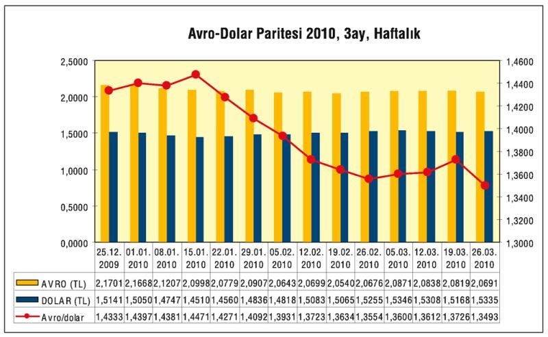

Avrupa Birliği'nin zayıf halkaları Yunanistan, Portekiz ve İspanya'nın zor durumda olmalarının dillendirilmesi ile AB'de kamu maliyesi krizi, bölge gündeminin ilk maddesi oldu. Özellikle Yunanistan'ın karşı karşıya kaldığı krizin çözümü konusunda Birlik yönetiminin gönülsüz davranıp bu ülkeyi IMF'e yönlendirmesi uzun bir süre AB'nin varlık nedenini bile sorgulatacak gibi görünüyor. AB'deki Avro krizinin Türkiye'ye etkileri ise çok önemli bir alt başlık.
| AVRO BÖLGESİ - TEMEL EKONOMİK GÖSTERGELER | ||||||||
| 2002 | 2003 | 2004 | 2005 | 2006 | 2007 | 2008 | 2009 | |
| Reel GSYH Büyümesi (Yüzde ) | 0, 9 | 0, 8 | 2, 1 | 1, 7 | 2, 9 | 2, 7 | 0, 6 | -4, 1 |
| İşgücü Maliyet Endeksi Artışı (Yüzde) | 3, 2 | 3, 1 | 3, 0 | 2, 3 | 3, 3 | 2, 7 | 4, 0 | |
| Yıl Sonu TÜFE Enflasyon (Yüzde) | 2, 3 | 2, 0 | 2, 4 | 2, 2 | 1, 9 | 3, 1 | 1, 6 | 0, 9 |
| Yıl Sonu İşsizlik (Yüzde) | 8, 5 | 8, 7 | 8, 9 | 8, 7 | 7, 8 | 7, 3 | 8, 2 | 9, 9 |
| İstihdam Artışı (Yüzde ) | 0, 7 | 0, 4 | 0, 8 | 1, 0 | 1, 6 | 1, 8 | 0, 7 | -1, 8 |
| Dış Ticaret Dengesi (Milyar Avro) | 90, 1 | 64, 9 | 64, 0 | 4, 0 | -20, 5 | 16, 6 | -41, 4 | 19, 7 |
| Cari İşlemler Dengesi (Milyar Avro) | 46, 1 | 20, 7 | 61, 7 | 11, 7 | -10, 2 | 10, 7 | -143, 3 | -57, 5 |
| Cari İşlemler /GSYH (Yüzde) | 0, 7 | 0, 3 | 0, 8 | 0, 1 | -0, 1 | 0, 1 | -1, 6 | -0, 6 |
| Bütçe Dengesi (Milyar Avro) | -187 | -231 | -230 | -206 | -111 | -54 | -181 | |
Kaynak: Eurostat
Avro Bölgesi'nin, toplamda krize girilen 2008'de yüzde 0, 6'ya düşen büyümesi 2009'da yüzde 4,1 negatif büyüme ile sürdü. Büyük talep düşüşlerinin etkisiyle enflasyonu yüzde 1'in altına düşen Avro bölgesinde işsizlik önemli bir sıçrama göstererek yüzde 10 eşiğine geldi. Avro bölgesinin bütçe açıkları da 2009'da yapılan devlet müdahaleleri, kurtarma ve destekleme operasyonları ile önemli ölçüde arttı.
2008'de Yunanistan Avro'ya büyük kamu borcuyla girmişti. Maastricht kuralı, kamu borcunun milli gelirin yüzde 60'ından fazla olmamasını gerektiriyor. İtalya, Belçika, İrlanda gibi diğer yüksek borçlularla birlikte bu kurala saygı göstereceği hesabıyla Para Birliği'ne dahil olmuştu Yunanistan. Ama hesap tutmadı. Yunanistan'ın kamu borcu hızla arttı ama bu durumun Brüksel'den gizlendiği ortaya çıktı. Yunanistan'ın, milli gelirinin yüzde 13 kadar bütçe açığı verdiği 2009 sonbaharında anlaşılınca risk primi arttı. Borçlarını çevirmek ve ilave taze para bulmak için girdiği uluslararası piyasalarda Yunan tahvillerinin faizi yüzde 6'nın üzerine çıktı. Yunanistan bu yüksek faizden borçlanmaya devam ederse, uygulamaya başladığı kemer sıkma programını başarsa bile, yüksek borç nedeniyle bütçesinin iki yakası bir araya gelemeyecek. İşte bu nedenle Yunanistan AB zirvesinden ucuz kaynak talep etti.
Yunanistan'ın mali krizi ile birlikte Güney Avrupa'nın da kırılgan olduğunun anlaşılması, Avro'yu da sarstı. Bu durum, bekleneceği gibi, en çok Almanya'yı rahatsız etti. Deutsche Mark'tan sağlam Avro koşuluyla vazgeçen Almanlar, gerileyen Avro karşısında kendilerini aldatılmış hissettiler.
Avrupa Merkez Bankası'nın zor durumdaki bir Avro üyesine kredi açması söz konusu değil. Bu durumda AB şöyle bir durumla karşı karşıya kaldı: Ya toptan Yunan tahvillerine kefil olacak ya da tek tek ülkeler Yunanistan'a düşük faizle borç verecek. Yunanistan ile aynı dozda olmasa da borç çukuru konusunda aynı kaderi paylaşan İtalya, İspanya, Portekiz, bir ölçüde Fransa, "AB üyeleri düşük faizle borç versin" diyorlar. Buna takati olan tek ülke Almanya, bir ölçüde de Hollanda. Orada da seçmenler, buna tepkili.
AB ülkeleri ister kefil olsunlar ister borç versinler, sonuçta Yunanistan riski Avronun sırtına yüklenecek demekti. Ancak, fedakarlıkla verilecek borçlar batarsa ne olacaktı? Avro daha çok batmayacak mıydı?
Bu çıkmazdan çıkışın yolu olarak Yunanistanın ucuz kaynağı IMF'den temin etmesi önerildi. Ancak IMF ile yapılacak anlaşma, Yunanistan'ı sıkı bir denetime sokacaktı, kemerlerin daha çok sıkılmasını isteyecekti.
Sonuçta, Avro Bölgesi'nin itibarını zedelemekle kalmayıp Avrupa Birliği'nin (AB) üzerine inşa edildiği en önemli ilkelerden olan ‘dayanışmanın' da sorgulanmasına neden olan Yunanistan'ın borç krizine yönelik çözüm arayışında Mart sonunda bir "çözüme" ulaşıldı. AB liderleri, Brüksel'de IMF yardımı ve ikili kredileri kombine eden bir yardım paketi üzerinde anlaştılar. Anlaşma, Yunanistan'a yardımda IMF'nin mutlaka rol oynamasını ve olası bir yardımın sıkı kurallara bağlanmasını talep eden Almanya Başbakanı Merkel'i tatmin eden bir içeriğe sahipti. Yunanistan Başbakanı Yorgo Papandreu da, yardım paketinin çok tatmin edici olduğunu ifade ediyordu. Net rakam verilmese de 20-22 milyar Avro tutarında kaynak sağlaması öngörülen yardım planı, bir ilkti. IMF, küresel krizin tavan yaptığı dönemde iflas noktasına gelen Macaristan, Letonya ve Romanya gibi Avro kullanmayan AB ülkeleri için devreye girmişti, ama ilk kez bir Avro Bölgesi ülkesinin yaşadığı bir krize müdahil oluyordu. Yunanistan kriziyle ilgili tıkanıklığın aşılmasında Fransa Cumhurbaşkanı Nicolas Sarkozy'nin Merkel'i ikna etmesi belirleyici olmuştu.
AB ülkeleri arasında tartışma yaratan ve gerginliklere neden olan krizle ilgili uzlaşıya ‘beklenenden daha çabuk' varılmasında Portekiz'in kredi notunun düşürülmesi, İrlanda ve İspanya'nın kamu açıkları konusunda yaşadığı ciddi ve büyüyen sorunlar etkili oldu. Nasıl bir uzlaşıya varılacağından çok uzlaşıya ne zaman varılacağına odaklanan Yunanistan ise gelinen noktadan çok memnun.
Varılan uzlaşı, IMF'nin önemli miktarda kaynak aktarmasına olanak sağlıyordu, bununla birlikte ‘yardımda' aslan payının AB ülkelerinde olması öngörülüyordu. Pakette, Yunanistan'ın Avro Bölgesi ülkelerinden borç alabilmesine de yeşil ışık yakılıyor, ancak bu ülkelere borç verme zorunluluğu getirilmiyor. Paket Yunanistan'ın iflasını engellese de yardım mekanizması Almanya'nın isteği üzerine çok sıkı kurallara bağlandı. Belirlenen kurallar çerçevesinde, Atina, Avro ülkelerinden kredi almak istediğinde piyasa değerlerinin altında bir faiz oranıyla borçlanamayacak ve Yunanistan'ın bu tür bir kredi talebinde bulunması durumunda AB Komisyonu ile Avrupa Merkez Bankası'nın olumlu görüşü ve Avro Bölgesi ülkelerinin tamamının onayı gerekecek. Yardım mekanizması ancak çok büyük zorluk durumunda ve başka bir çözüm yolu olmadığında devreye sokulabilecek. Bu, parayı ağırlıkla Almanya'nın temin etmesi, ama IMF'yi denetçi olarak Yunanistan'ın başına dikmesi demekti.
Güney Avrupa'daki sarsıntının tüm AB'ye yayılması, AB'deki nezlenin Türkiye'de grip olarak hissedilmesine yol açacağını gösteriyordu. Türkiye'ye etkiler, Avro üstünden hissedilmeye başlandı.
AB, Türkiye için dış ticaret, doğrudan yabancı sermaye, sıcak para ve diğer borçlanma hareketleri açısından en önemli partner. Ayrıca Türkiye'nin turizm endüstrisi çarkı da büyük ölçüde AB rüzgarıyla dönüyor.

2009'da yüzde 23 azalsa da 102 milyar dolar olarak gerçekleşen ihracatta AB yüzde 46 pay aldı. Türkiye'nin ithalatının ise yüzde 40'ı AB'den. 2009'da AB'den 56 milyar dolarlık ithalata karşılık, bu bölgeye 47 milyar dolarlık ihracat yapıldı. Avronun düşüşü, Türkiye için TL cinsinden ihracat gelirinin azalması, ithalatın ise görece ucuzlaması demek. AB'deki sıkıntının sürmesi ile AB'nin ihracat talebi düşmeye devam edebilir. Ama düşmese de, düşmüş Avro ile ihracat Türkiye'nin aleyhine. Buna karşılık doların yükselişi, Türkiye ihracatçısı için iyi haber değil. Çünkü, ihracatçı, AB'ye sattığı otomotiv, beyaz eşya, giyim vb. malları, önce dolarla borçlanıp o dolarlarla Asya'dan ucuz girdi ithal ederek (içeride ucuz emek kullanarak) üretiyor ve AB'ye satıyor. Yükselmiş dolar, hem borçlanma maliyetini, hem ithal girdi, dolayısıyla, üretim maliyetini artıracağı için Türkiye ihracatçısının rekabet gücünü olumsuz etkiler ve onu biraz daha dampingli satışa mecbur bırakır. Bu da iyice yoksullaşmak demektir.
AB'deki sarsıntı, bölgedeki sıcak paranın çekilişini de getiriyor. Türkiye de bundan nasibini alır ve sıcak para satıp çıkmaya başlar. Bu da doları yukarı iter. Doğrudan yabancı sermaye girişi zaten 2009'da çok düşmüştü. İnişe geçen Türkiye ekonomisi doğrudan yabancı sermaye girişlerini de bir başka bahara bekler.
Türkiye'nin 2009'un 9'ncu ayı itibariyle dış borç stoku 275 milyar dolara yakındı ve bunun ancak 100 milyar doları Avro üstünden borçlanmaydı. Avro'daki düşüş, ancak dış borçların üçte birini olumlu etkiler, buna karşılık dolardaki yükseliş, kalan dış borç stokunun üçte ikisinin çevrilme maliyetini yukarı çeker.
Turizmde de 27 milyonu bulan turist girişinde AB'nin payı yüzde 52. AB'deki sıkıntı, turizm taleplerini bir sezon daha aşağı çeker ya da Türkiye turizmcisini bu yıl da fiyat kırmaya zorlar. Hem de Akdeniz çanağındaki rakiplerle dibe doğru yarışarak!... Turizmci hem Avro'daki düşüşten hem de talep yaratmak için yapacağı dampingden dolayı iyice yoksullaştırıcı turizm batağına saplanabilir.